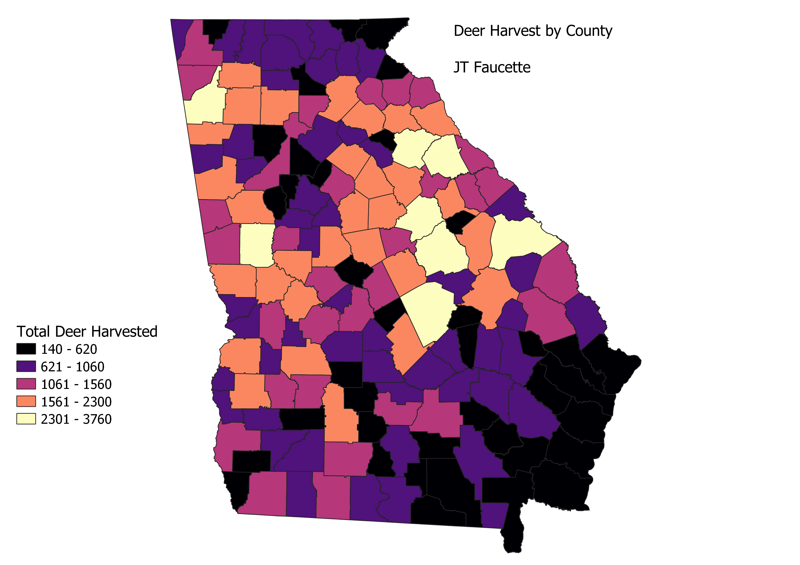

Homework 9: A map of total deer harvested in Georgia by county.
JT Faucette
This map topic was inspired by roommate, Ryan, an avid hunter and country boy. The dataset I used was provided by the Georgia Department of Natural Resources. I decided to use natural breaks in classifying the data in order to highlight the especially prolific deer hunting counties. I also chose my colors in order to do this. The "Magma" gradient in QGIS created a heatmap-like appearance. I decided to forego both a North and a scale as my choropleth is not intended to accurately show directions or distances, just deer.

Data used for this project found at https://gamecheckresults.gooutdoorsgeorgia.com/?reportId=348
Link to cleaned CSV dataset
Link to geoJSON